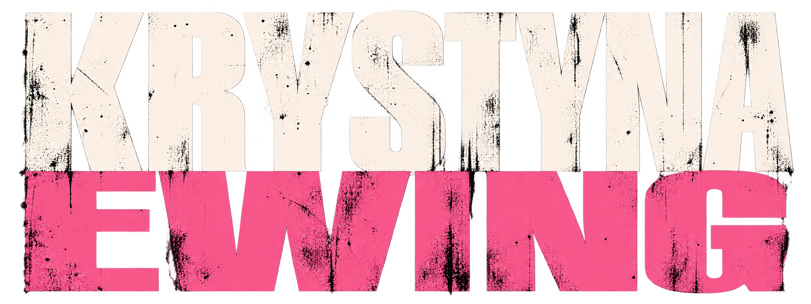
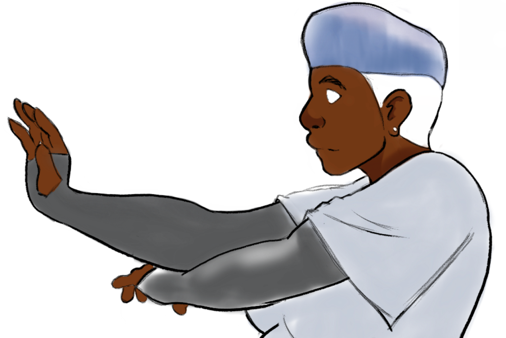
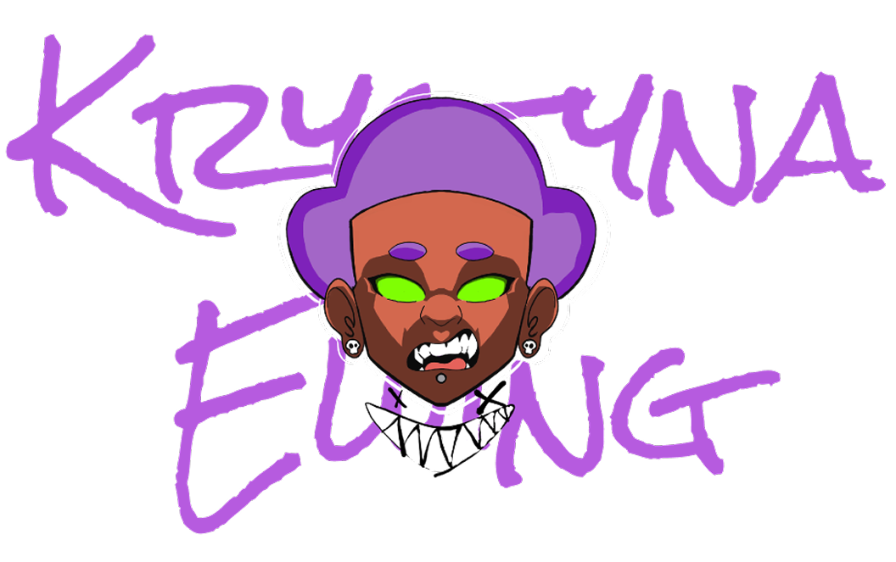
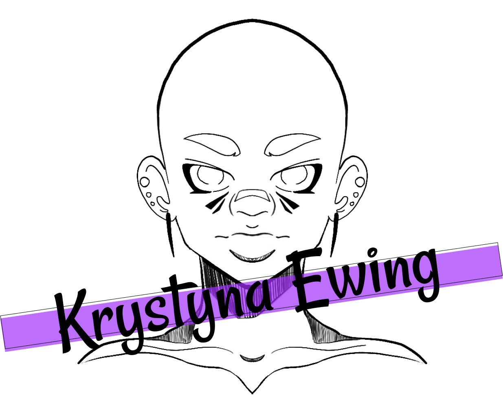

Krystyna Ewing

UX designer, creative technologist, artist & maker.
UX · Art · Technology
Beautifully unhinged
I'm a designer, artist, developer, and general maker of things. I started in software development, moved into UX because I wanted more room to be creative, and apparently never learned how to pick one thing and stick with it.
I've spent the last 8+ years designing, building, testing, breaking things, and figuring out how to make them work better. Outside of UX, I make art, build 3D prints, mess around with code, and start projects because I thought, “I wonder if I could make that.”
Usually I can.
Sometimes I absolutely cannot.
Either way, I'm probably going to try.
Selectedwork
Index of exhibits · 05
-
01 · Featured
ResiliencePoint

HazAdapt · Lead UX Designer · 2023 to 2024
We built what we thought people needed. Then the evidence changed the product.
Read the case study →↖ ruined me for shipping without evidence, honestly.
-
HazAdapt · Lead UX Designer · 2023 to 2024
Bringing trusted local safety information directly into HazAdapt's Hazard Guides.
Read the case study →02
LoCo
-
03
Prep Checks
HazAdapt · Lead UX Designer · Web, Mobile Web
Bite-sized preparedness activities people actually finish.
Read the case study →
-
04 · Company collection
True Link
FinancialFinancial tools built to protect autonomy, not just assets.
-
Standalone · UX / UI Designer · Student project
Redesigning how a nonprofit monitors remote water infrastructure, from a dense table to scannable, status-first cards.
View case study →still couldn't leave a spreadsheet alone.
05
WellDone
Also true · Art, experiments, things I make
the workbench
Apparently I can't leave things alone. {{ benchHint }}
- 3D printing & fabrication
- Sculpture & mixed media
- Illustration & 3D modeling
- Creative coding
- Strange prototypes

I had an idea. Unfortunately, that meant I had to make it.


Placeholder · fabrication
Placeholder · sculpture
The physical stuff — sculpture, prints, anything made with my hands instead of a tablet — isn't photographed yet. When it is, it'll be sitting right here on the table.
About · wall label
- Artist
- Krystyna Ewing, Detroit-born
- Medium
- Software, UX, art, 3D printing, curiosity
- Hours
- Including 1am
Detroit-born, lifelong artist, and someone with a bad habit of needing to know how things work. That curiosity took me from software development into UX, and it still shows up in accessibility reviews, 3D printing experiments, and whatever I'm building at 1am.
Want the longer version? View résumé →